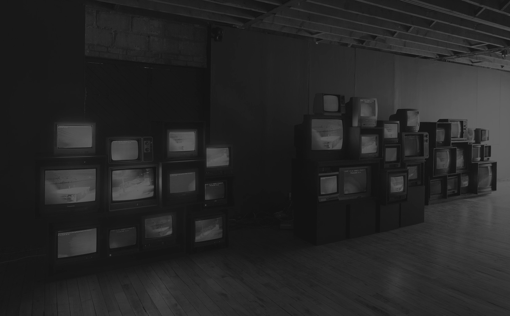

Разработка приложений
для Smart TV
для Smart TV
Популярные Smart TV платформы:
- Samsung
- LG
- Philips
- Panasonic
Популярные Set-top box платформы:
- Dune
- Eltex
- Mag
- Amino
Что внутри?
- ARM, флеш-память
- Linux
- Webkit, Presto
- HTML, CSS, Javascript
Трудности при разработке:
- Низкое быстродействие
- Отсутствие средств отладки
- Ограничение на кросс-доменные запросы
- Оверскан
Трудности при разработке:
- Низкое быстродействие
- Отсутствие средств отладки
- Ограничение на кросс-доменные запросы
- Оверскан
- Обратная навигация
- Разнообразные устройства ввода
Трудности при разработке:
- Низкое быстродействие
- Отсутствие средств отладки
- Ограничение на кросс-доменные запросы
- Оверскан
- Обратная навигация
- Разнообразные устройства ввода
- Различия платформ
Достоинства Zombiebox:
- Быстродействие
- Кроссплатформенность
- Быстрая скорость разработки
- Высокое качество разрабатываемого продукта
- Поддержка истории перемещений
Воркфлоу:
- Определить версию браузера на устройстве
- Скачать ближайшую версию браузера для компьютера
- Скачать SDK
- Выбрать фреймворк или его отсутствие
- Разработать приложение согласно рекомендациям
- Протестировать на своем компьютере, в эмуляторе, на устройстве
- Опубликовать
Разработка приложений для Smart TV
Андрей Мотошин